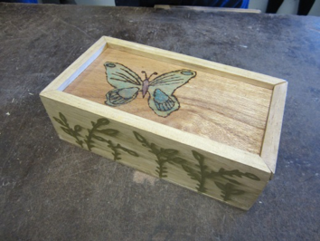

The NSW TAS Syllbus
Technology Mandatory Years 7–8 Syllabus
Technology Mandatory engages students in design and production activities as they develop solutions to identified needs and opportunities. Through the practical application of knowledge and understanding they learn about Agriculture and Food Technologies, Digital Technologies, Engineered Systems and Material Technologies. The Technology Mandatory Years 7–8 course includes Life Skills outcomes and content for students with disability.
Example Projects
| Food Technologies | Textiles | WoodWork |
|---|---|---|
 |
 | |
| Yoghurt Parfait creation | Pyjamas | Pencil Pox with Engraving |